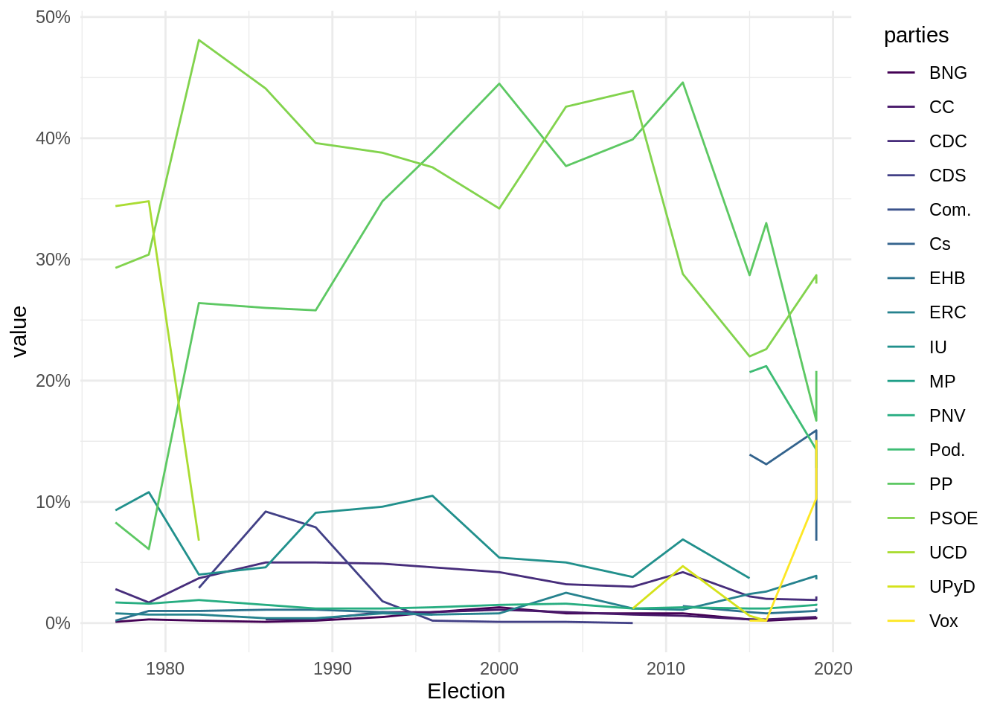
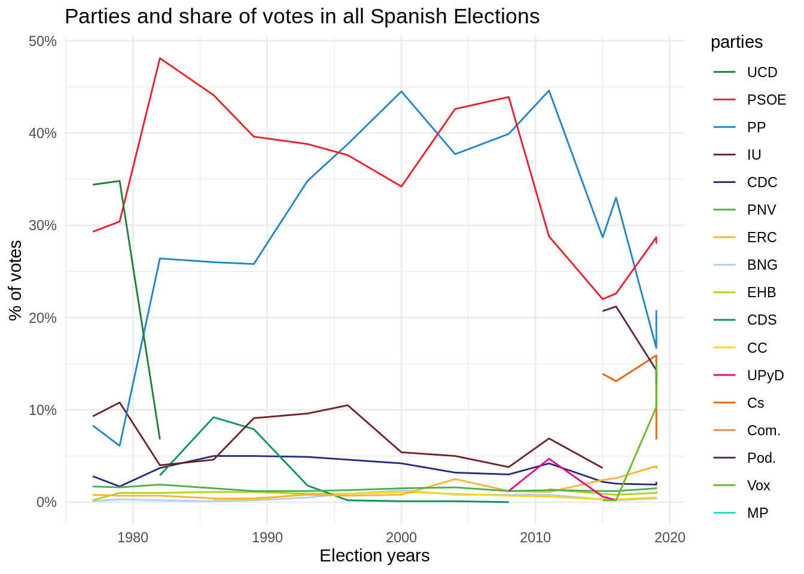

3 A primer on Webscraping
TODO
- Here a quick example using rvest to scrape Wikipedia tables. You need to add the Wikipedia page to
scrapex.
##
## Attaching package: 'dplyr'## The following objects are masked from 'package:stats':
##
## filter, lag## The following objects are masked from 'package:base':
##
## intersect, setdiff, setequal, union
library(tidyr)
library(stringr)
library(ggplot2)
link <- "https://en.wikipedia.org/wiki/Elections_in_Spain"
html_website <-
link %>%
read_html()
html_website## {html_document}
## <html class="client-nojs" lang="en" dir="ltr">
## [1] <head>\n<meta http-equiv="Content-Type" content="text/html; charset=UTF-8 ...
## [2] <body class="mediawiki ltr sitedir-ltr mw-hide-empty-elt ns-0 ns-subject ...
all_tables <-
html_website %>%
html_table()
elections_data <- all_tables[[5]]
elections_data %>%
select_if(is.character)## # A tibble: 16 × 8
## Election `UCD[a]` `IU[c]` `EHB[g]` `CDS[h]` UPyD Cs Com.
## <chr> <chr> <chr> <chr> <chr> <chr> <chr> <chr>
## 1 Election "" "" "" "" "" "" ""
## 2 1977 "34.4" "9.3" "0.2" "" "" "" ""
## 3 1979 "34.8" "10.8" "1.0" "" "" "" ""
## 4 1982 "6.8" "4.0" "1.0" "2.9" "" "" ""
## 5 1986 "Dissolved" "4.6" "1.1" "9.2" "" "" ""
## 6 1989 "Dissolved" "9.1" "1.1" "7.9" "" "" ""
## 7 1993 "Dissolved" "9.6" "0.9" "1.8" "" "" ""
## 8 1996 "Dissolved" "10.5" "0.7" "0.2" "" "" ""
## 9 2000 "Dissolved" "5.4" "Boycotted" "0.1" "" "" ""
## 10 2004 "Dissolved" "5.0" "Banned" "0.1" "" "" ""
## 11 2008 "Dissolved" "3.8" "Banned" "0.0" "1.2" "0.2" ""
## 12 2011 "Dissolved" "6.9" "1.4" "Dissolved" "4.7" "Did… "0.5"
## 13 2015 "Dissolved" "3.7" "0.9" "Dissolved" "0.6" "13.… "[k]"
## 14 2016 "Dissolved" "[k]" "0.8" "Dissolved" "0.2" "13.… "[k]"
## 15 Apr. 2019 "Dissolved" "[l]" "1.0" "Dissolved" "Did not r… "15.… "0.7"
## 16 Nov. 2019 "Dissolved" "[l]" "1.2" "Dissolved" "[m]" "6.8" "[n]"
wrong_labels <- c(
"Dissolved",
"[k]",
"[l]",
"[m]",
"n",
"Banned",
"Boycotted",
"Did not run"
)
wrong_labels <- paste0(wrong_labels, collapse = "|")
semi_cleaned_data <-
elections_data %>%
mutate_if(
is.character,
.funs = str_replace_all,
pattern = wrong_labels,
replacement = NA_character_
) %>%
mutate(Election = str_replace_all(Election, "Apr. |Nov. ", "")) %>%
mutate_all(as.numeric) %>%
filter(!is.na(Election)) %>%
rename_all(~ str_replace_all(.x, "\\[.+\\]", ""))
cleaned_data <-
semi_cleaned_data %>%
pivot_longer(-Election, names_to = "parties")
cleaned_data## # A tibble: 255 × 3
## Election parties value
## <dbl> <chr> <dbl>
## 1 1977 UCD 34.4
## 2 1977 PSOE 29.3
## 3 1977 PP 8.3
## 4 1977 IU 9.3
## 5 1977 CDC 2.8
## 6 1977 PNV 1.7
## 7 1977 ERC 0.8
## 8 1977 BNG 0.1
## 9 1977 EHB 0.2
## 10 1977 CDS NA
## # … with 245 more rows
tail(cleaned_data)## # A tibble: 6 × 3
## Election parties value
## <dbl> <chr> <dbl>
## 1 2019 UPyD NA
## 2 2019 Cs 6.8
## 3 2019 Com. NA
## 4 2019 Pod. 12.8
## 5 2019 Vox 15.1
## 6 2019 MP 2.4
cleaned_data %>%
ggplot(aes(Election, value, color = parties)) +
geom_line() +
scale_y_continuous(labels = function(x) paste0(x, "%")) +
scale_color_viridis_d() +
theme_minimal()## Warning: Removed 92 row(s) containing missing values (geom_path).
html_website %>%
html_nodes(xpath = "//table[@style='text-align:center; font-size:90%;']") %>%
html_nodes(xpath = "//th")## {xml_nodeset (105)}
## [1] <th class="sidebar-title"><div class="adr"><a href="/wiki/Politics_of_Sp ...
## [2] <th><a href="/wiki/File:Escudo_de_Espa%C3%B1a_(mazonado).svg" class="ima ...
## [3] <th style="border-bottom: #aaa 1px solid"></th>
## [4] <th>Division</th>
## [5] <th>PSOE</th>
## [6] <th>PP</th>
## [7] <th>PAR</th>
## [8] <th>IU\n</th>
## [9] <th>Seats</th>
## [10] <th>3</th>
## [11] <th>2</th>
## [12] <th>1</th>
## [13] <th>1\n</th>
## [14] <th>Division</th>
## [15] <th>PSOE</th>
## [16] <th>PP</th>
## [17] <th>PAR</th>
## [18] <th>IU\n</th>
## [19] <th>Seats</th>
## [20] <th>2</th>
## ...
all_style_attr <-
html_website %>%
html_nodes(xpath = "//table[@style='text-align:center; font-size:90%;']") %>%
html_nodes(xpath = "//tbody//th[@style]") %>%
html_attr("style")
where_background <- all_style_attr %>% str_detect("background")
party_colors <- all_style_attr[where_background] %>% str_replace_all("background:", "")
parties <- names(semi_cleaned_data)[-1]
colors_lookup <- tibble(parties = parties, party_colors = party_colors)
cleaned_colors_data <-
cleaned_data %>%
left_join(colors_lookup)## Joining, by = "parties"
tmp_colors <- cleaned_colors_data %>% distinct(parties, party_colors)
vector_colors <- tmp_colors$party_colors
names(vector_colors) <- tmp_colors$parties
cleaned_colors_data %>%
ggplot(aes(Election, value, color = parties)) +
geom_line() +
scale_y_continuous(name = "% of votes", labels = function(x) paste0(x, "%")) +
xlab("Election years") +
scale_colour_manual(values = vector_colors) +
ggtitle(label = "Parties and share of votes in all Spanish Elections") +
theme_minimal()## Warning: Removed 92 row(s) containing missing values (geom_path).
- Here a quick example using rvest to scrape IMDB (? better example ?). You need to add the Wikipedia page to
scrapex.